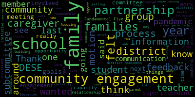
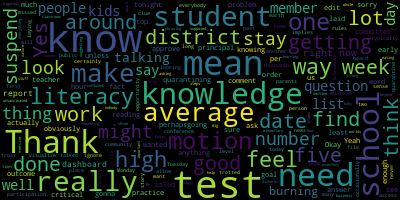

AI-generated transcript of Regular School Committee Meeting November 8, 2021
English | español | português | 中国人 | kreyol ayisyen | tiếng việt | ខ្មែរ | русский | عربي | 한국인
Back to all transcripts
[Van der Kloot]: You can dial in. Dialing number is 1301-715-8592. Member McLaughlin, could you please take the roll call?
[Unidentified]: Member Graham? Here. Member Kreatz? Here. Member McLaughlin here. Member Mustone? Here. Member Ruseau? Present. Member Van der Kloot? Present. Not present.
[Van der Kloot]: Thank you. So we have six members present and one absent. The mayor is absent this evening and she asked me to chair the meeting. Could you please rise for the salute to the flag? I pledge allegiance to the flag. Thank you. The first item before us is the consent agenda, the approval of bills and payrolls, and the regular school committee meeting minutes of October 18, 2021. Motion to approve.
[Graham]: Second.
[Van der Kloot]: So on the motion of Member Graham and seconded by Member McLaughlin, all in favor? Aye. Anyone opposed? The motion passes. report of subcommittees. This is the Special Education and Behavioral Health Subcommittee. The report will be given by Member McLaughlin. We do understand that this was a difficult meeting and that other members could not attend. But Melanie, if you could give us a synopsis. Sure, thank you.
[McLaughlin]: We met for our first Behavioral Health Subcommittee meeting, Behavioral Health Special Education Subcommittee meeting to identify goals for the We did not have a lot of participation, just I think it's people getting back into the routine and into the groove. So we tentatively identified two goals, although we would like to fold off on those goals being shared and since they were not voted on and place this on file. But before I do so, I would like to mention that the next meeting is November 18th and we are asking community members to please join us for the subcommittee for behavioral health and special education so we can ascertain the goals for the year and benchmarks on how we'll achieve them.
[Van der Kloot]: So I would, yeah, so someone let me.
[Ruseau]: Motion to place the report on file.
[Van der Kloot]: On the motion by Mr. Rousseau to place the file, seconded by Ms. McLaughlin. All in favor?
[Unidentified]: Aye.
[Van der Kloot]: All opposed? The motion passes. Um, could I ever anything?
[Ruseau]: Yes, I'd like to make a motion to suspend the rules to allow public participation.
[Van der Kloot]: Public comment on the motion, uh, by member Rousseau to suspend the rules. Do I hear second? Second by member Graham. All in favor. I all opposed. Would you like to come forward, please?
[SPEAKER_01]: Good evening and thank you very much. My name is Michael Halle. I'm a field representative for teams is local 25, and I have the honor of representing the men and women who drive school buses for the children attending Medford public schools. They are employed by a company called Eastern bus. The group has endured in a tremendous battle earlier this year when they voted to join a union to improve their working conditions at Eastern bus. As we started negotiations last school year, local 25 cent letters to members of the board asking for support in their fight to get a fair contract there. Since then, I'm here to tell you that we have been fighting for over half a year trying to get this group a fair contract and we're no closer than we were on day one. The National Labor Relations Board is pursuing charges against management there at the end of this month for their actions and treatment against this group, a group of men and women, mostly minorities. And they've endured a tremendous battle, as I've said, and they deserve a fair fight. Teams' Local 25 is asking you to contact Eastern Bus and demand that they negotiate a fair agreement for the men and women responsible for transporting MedFed's most Precious Commodity, the school children. I ask each and every one of you to reach out to the owners of this company and demand that they bargain fairly so we can achieve a contract for that group. Thank you very much.
[Van der Kloot]: Thank you very much. Thank you. Thank you for letting us know. I just want to, we do have another presentation tonight. by Mr. Chris Richard. Usually those don't take place though till seven o'clock. That was unusual. So can we, are you comfortable with, okay, great. Thank you very much, Mr. Richard. So to a motion to resort back to the regular order of business.
[Unidentified]: Yes, second.
[Van der Kloot]: Okay, member motion by member. We're so seconded by member McLaughlin will return to the regular order all in favor. I will return to the regular order of business report of the superintendent number one public health update.
[Unidentified]: Oh, okay. Oh, I don't have that.
[Van der Kloot]: Okay. A report of the superintendent's remarks come first. Thank you.
[Edouard-Vincent]: Good evening. Fall is definitely being felt by all of us with the weather getting colder and daylight savings time, which has now ended. November has arrived. First, I would like to say, let me take this opportunity to congratulate our mayor, Breanna Lungo-Koehn, Jenny Graham, Melanie McLaughlin, Mia Stone, Kathy Kreatz, and Paul Russo, who won re-election to this body. I'd also like to recognize Sharon Hayes on winning a seat on Medford School Committee. So congratulations to all of you.
[Unidentified]: On November 2nd,
[Edouard-Vincent]: On November 2, our teachers and staff participated in professional development. In the morning, our special education staff discussed IEP writing strategies, while non-special education staff discussed equity and inclusion. Immediately following the morning session, the district staff participated in a seminar concerning implicit and unconscious bias. After lunch, our elementary staff discussed the importance of responsive classroom and secondary staff worked on department-based activities. Our nurses participated in online professional development. Our vocational staff, our CTE staff discussed the vocational framework revisions and guidance presented on Naviance training for our middle schools. while the high school staff worked on independent projects. Our superintendent in residence, Carmen Williams, presented community building and shared practices with our paraprofessional staff. Also last week was the joint ma SS ma SC Massachusetts Association of school superintendents and Massachusetts Association of school committees conference in hyenas in attendance were a member so and member Graham, who attended in person. And I did have the opportunity to present on a panel with other superintendents and school committee members to that gathering. It was a large in-person gathering and we were glad for that. I also know, I think other members of the committee participated remotely. That was a great learning experience. I wanted to share for our parents who may be struggling financially. that there are less than two weeks left to access up to $1,800 per child with the child tax credit. It has been brought to my attention that at least 450 children in our community could be eligible for this funding, but only 22 families have signed up in Medford so far. I urge our families to go to find your friends.org where they can find further information and learn about how to sign up translations are provided on the site and the deadline to apply is November 15. In the sports category. Our Mustang athletes have been incredibly competitive this year. I just want to share our girls cross country. They are the greater Boston League GBL champs, seven and zero boys cross country, six and one boys soccer, 12, zero and six. They're the GBL champs. They will play in the second round of MIAA tournament at Newton North tomorrow night at 6 p.m. Our girls soccer team, nine, five, and four, they also have qualified for the MIAA tournament. Girls volleyball, 12 and six, qualified for the MIAA tournament. Boys and girls middle school cross country, they are the GBL champs. Boys and girls crew, they competed in two regattas. There was no league tournament this season. Football, we are two and six, and the Thanksgiving football game will be held in Malden this year. Our athletic director, Bobby Maloney would like to give a special shout out to the head coach mascara Andre and her assistant coaches, Michael McLaughlin and john scary for an unbelievable first season of unified basketball. The Mustang unified team became became the favorite the favorite team this fall season. It was wonderful to see our athletes so competitive and eager to cheer one another on. So again, we want to congratulate Unified Sports basketball team. They did a wonderful job and thank you to all the coaches. As you are aware, the Medford Board of Health, in partnership with our Director of Health Services, Nurse Avery Hines, will be providing a vaccine clinic for students aged five to 11 at the Andrews Middle School this Wednesday, November 10th, from three to 7 p.m. And on Saturday, November 20th, from nine to 1pm. We are hopeful that parents will take this opportunity to protect their children, family, school community by getting the vaccine. It is an area of concern that I do want to just highlight, and you will hear more in the COVID update. However, as a superintendent, I have to remind you to please keep your child at home if they are not feeling well. We have seen a slight uptick in community transmissions. So this includes if your child has been deemed a close contact. I urge you not to send your child to extracurricular activities. Your child should be quarantined at home for the duration of the quarantine window. So I am very pleased to announce that in-person open playtime is going to be taking place with the Medford Family Network on Saturdays. This event is going to take place for the next five Saturdays. Registration is required. Parents and caregivers are welcome. The time slots that are available are 9 to 1030am or 1030 to noon. Masks are required for ages two and up. So please take advantage of the Medford Family Network. I would be remiss if I didn't take this opportunity to wish our Hindu, Sikh, Jains, and Buddhist neighbors a happy Diwali, as the five-day Festival of Lights holiday comes to an end tonight. May the light of Diwali remind all of us that from darkness, there is knowledge, wisdom, and truth. from division, unity, and from despair, hope. Blessings to all. A few upcoming events and reminders. On Wednesday, November 10th, throughout the entire day, our high school humanities students will be listening to presentations from local veterans who will be discussing their experiences serving in the United States Armed Forces. We are pleased that this annual event is able to return to our classrooms. The mayor and members of the school committee are welcome to attend. Also, on Wednesday evening, school committee member Melanie McLaughlin will be the guest speaker for the November CPAC meeting. Member McLaughlin will present how disability rights align with civil rights. The meeting will be held via Zoom from 6 to 8 p.m. Additionally, November is CPAC Awareness Month in Massachusetts. CPAC works collaboratively with the school district to help to outline the rights of our special education students and parents. I would like to take this opportunity to thank the co-chairs, Ms. Tanya Sullivan and Alex Lorik and all the members of CPAC for their hard work and dedication to Medford CPAC. Lastly, there will be no school Thursday, November 11th in observance of Veterans Day. As my older brother, a career Army veteran often reminds me, Veterans Day is different from Memorial Day. While these holidays both honor the military, there is a significant difference between the two. Memorial Day honors the men and women who died while serving in the military. It honors those who made the ultimate sacrifice in service to our country. Veterans Day honors all who served in the armed forces. We thank all of our veterans, those serving, and those who have served for putting their personal lives on hold to protect the freedoms we all enjoy. Thank you.
[Van der Kloot]: Thank you, superintendent. Superintendent, could I ask that in the future when we do our agenda, that report of the superintendent, always that the first item be labeled comments from the superintendent or report, just so that it's clear. And I do want to take a minute to say I appreciate the fact that you were one of the panel speakers at our MASC conference. I was able to listen in virtually, And I must say, it made me feel very proud that we were so well represented. So thank you for being there. And I'd like to thank member Rousseau and member Graham for being there and being part of the resolutions committee. So thanks for going down. Okay, the first now, next order of business is our public health update. and we're going to hear from David Murphy and Ms. Hines.
[Unidentified]: Welcome.
[Murphy]: Good evening, members of the committee. When we presented before you a couple of weeks ago, we made reference to the eventual transition of the public health update ultimately being incorporated into the superintendent's report. And Miss Hines being available to answer questions when there were specific public health related changes that were occurring, rather than continuing to break our own record for having the head of health services available for all school committee meetings at all times. We also said that when there were specific issues that were coming up public health related we would make sure that everyone was present to be available and as it as it happens in this first meeting because of the addition of the vaccination clinics that the science is going to expand upon momentarily, and some of the other. the volume of questions that have come in related to some of the public health protocols, we thought it best to put off that transition until your next meeting, which I believe is next week. So I wanted to just open the public health update with that framing so that you didn't think we were walking back what we had said at the last meeting, but Ms. Hines has some new data and information to share with you, and then I'll be happy to take your questions at that point.
[Hines]: Good evening. The number of positive COVID cases in Medford does seem to be rising for November. In the first seven days of October there were 55 cases and already in the first seven days of November there have been 78. As has been mentioned, we do have vaccination clinics for the newly approved Pfizer COVID-19 vaccine for children ages 5 to 11. They're scheduled at the Andrews for this Wednesday from 3 to 7 and on November 20 from 9 to 1, which is a Saturday. There are appointments, but there are also 60 walk-in appointments available that don't need to be scheduled before showing up. So we do have, if you aren't able to make an appointment, please come on in. We have 60 slots available both days. We're also actively working with the Medford Board of Health to provide additional vaccine clinics for the five to 11 year old population in order to meet the overwhelming interest that has been displayed since the original clinic registration began. It's really reassuring to see that so many young students want to get vaccinated. And then in terms of our Medford Public School testing from November 1 to November 5, so last week, our Medford Public School nurses completed 3,815 COVID-19 tests during the first week of November. This included 315 pooled surveillance tests where one positive individual was identified for a percent positivity of 0.37% for our surveillance testing program. School nurses also saw 18 symptomatic students during the school day who were either able to be tested in the nursing office prior to their dismissal or referred to testing. Outside of our surveillance testing program, Medford Public Schools had 13 positive cases among both staff and students for a percent positivity of 0.25% of our entire MPS population. Three positives were found in school through symptomatic testing in the nursing office. Nine positives were found outside of our school testing program. 10 of our positive individuals were under 12 years old. None of our positive individuals were vaccinated against COVID-19. Seven positive individuals had known exposure outside of the school setting. And six positive individuals came into school while symptomatic. The MedBurgh Public School Health Services Department continues to remind students, families, and staff to stay home from school if experienced illness symptoms. Even if you're fully vaccinated, it is important to stay home and seek PCR testing. Thank you.
[Ruseau]: Thank you.
[Murphy]: I loved hearing all those numbers can we get them in a document, since I don't you just before the meeting we provided you with that going forward. In addition to the transition with respect to the science in person appearance will also make sure that we provide the memo earlier.
[Ruseau]: I think when I was looking at the dashboard today, and I think everybody here has heard from the community, it's from parents, but the number of students quarantining really needs to be on the dashboard. So if you want a motion, I'll make a motion unless you will just do it.
[Murphy]: I think, I don't see a reason why we couldn't provide that on the dashboard. Other than, I guess, there's more fluctuation. And so we try to keep it as up-to-date as possible, but the most accurate information you'll have is the amount, the volume of quarantining, looking back over the previous week, which I think will essentially achieve that objective of sharing that information, and we're happy to provide it. But the quarantine number fluctuates by the day, and I don't think we could commit to a real-time update on that.
[Ruseau]: Yeah, I certainly feel like, I mean, I did not visualize what it might look like, but like the number of student quarantine days per week, perhaps, per school, because then you can ignore the fact that a student might have been quarantining Monday, Tuesday, you know. But whatever you work out, as long as, you know, you'll think it through, and I trust that you can get it to make sense.
[Murphy]: Yeah, I think the information would definitely be provided on a weekly basis. I guess the only caveat I would put on it is that, where the quarantining is concentrated has an impact on what protocols are put in place to support those students. So if we had 80 students quarantine, this wouldn't necessarily be the case, but they were spread out across 12 plus grade levels and across eight schools and in all sorts of different areas of each building. The response with respect to some of the provisions that we've said that we will provide to students who are in quarantine would vary significantly than if, you know, God forbid, there should be some type of like super spreader among that particular, excuse me, you know, class or grade level in the school. in which case students that are concentrated in the same area are all all of a sudden on quarantine together. That would necessitate a different type of response. So provided that we understand that the data can be provided, but there are different inferences that can be drawn or should not be drawn, I don't see that as a problem.
[Ruseau]: Thank you.
[Van der Kloot]: Do you have a question, Member McLaughlin? I do. Please.
[Unidentified]: I don't think you can see the light. I'll move that up.
[McLaughlin]: Thank you for the report. I'm not sure if it's a question for you folks or for the superintendent to answer, but I know that I've been getting some information that on occasion, students are being quarantined more than once in the course of a month. And I know that we had discussed remote learning as an option, and I'm wondering what the status is on that and whether that's happening for families who are getting quarantined extensively.
[Murphy]: So, I, you're certainly it's certainly true that there have been some students who have been quarantined multiple times. And that's part of why we are addressing each suite of student supports that are provided on a case by case individual basis because what might be best for a student in the sort of the prongs of the analysis that we've told all administrators they should be looking at are what is the grade level, what is the content area, what is the particular lessons or instruction that is potentially being missed in contemporaneously because the student is on quarantine. And the types of supports that could be provided and when I say types of supports, I mean a live feed into the class some after school support via zoom. Additional supports that come in once the student returns those are three distinct types of types of supports that it may be in the best interest of the student. could vary depending on whether or not this is the one and only time the student is missing five days, or perhaps this is the second time in a 20 day period that the student is missing five days. And that's why we've advised principals to work with individual teachers to determine what is in the best interest of that student or group of students in that particular instance. And we don't think there's a one size fits all solution to that. But I think the fact pattern that you identify, Ms. McLaughlin, of a student that is missing successive periods of time or potentially not consecutive, but additional time is something that would have to be taken into account when we determine what type and what level of support the students would receive.
[McLaughlin]: Thank you. So, and what is the parent or caregiver engagement on that basis? So in other words, how are the parent and caregiver engaging in that process to ensure that they're involved?
[Murphy]: I think with every, as with every situation that it has to be robust and it has to be effective communication. And so that that is another piece that we've, we've asked administrators to be cognizant of. As with any situation, there could be some variability as well. You could imagine a situation in which students at a higher grade level perhaps are having more direct communication with the teacher, with the adjustment Councilor, with whoever is involved in providing those supports. But looking at each case on a case-by-case basis, the determination has to be made as to how best to engage the family caregiver.
[McLaughlin]: So I guess in summary, if a family is being quarantined or if a family has a student or child that is being quarantined multiple times and feels that perhaps there's a need for intervention from a remote learning process, or what have you. I understand that you're saying it's a case by case basis but To what end is the family pursue that so that they can engage in that process. So if I understand you're saying that the principal and the teacher sort of work together to decide, but how is the family being engaged so that certainly I've had family members that have approached me or written to me to express their concern. So, should they be writing to school committee members should they be writing to the principal should they be writing to the superintendent should they be like, what is the process for them.
[Murphy]: Yeah, I think that the communication should be pre existing with the teacher. Okay, there has to be that ongoing dialogue between the teacher and the parent or caregiver. at any point, the parent or caregiver feels as though their child is not being provided the supports that they need in that instance, either whether it be their first time being quarantined or their third time being quarantined, they should absolutely reach out to the school principal. And the principals are prepared for those conversations. They're trying to prevent them to begin with by working with teachers again, but they will, our principals will be responsive if and when those concerns are raised.
[Van der Kloot]: Okay, thank you. Member Ruscio.
[Ruseau]: Thank you. When I was at the conference this past week, I never missed an opportunity to ask, how on earth are you getting this test and stay thing done? And there was a question I asked that not one person could answer, perhaps because it's at a level that a school committee member doesn't typically have access to, but where are you getting your tests from? I mean, every day there's another news story about there are no tests, the fact that we can't pump out enough tests. I can't find a test when we need tests at home, and we don't have thousands of them laying around at the schools. Test and stay, the first word is test. That implies that you can test. And no school committee member that I talked to, and I don't know how many people I asked, it was not two, it was not five, it was more than that, had a clue. They all trotted out the well, we're just getting it done. And occasionally they would say, well, we're doing it only in the elementary school because we don't have enough. But you know, if we had one classroom of unvaccinated kids, and we're going to test and stay for five days, we need 100 tests as 20 kids. And I I'm not asking you to dig into your inventory for the whole district, but 100 tests is a lot of tests. And I just I'm very confused how all these districts say they can do it when nobody can buy tests.
[Murphy]: Well, just I want to be clear that I am not in any way making assumptions about the veracity of assertions made by school committee members elsewhere in the Commonwealth. But I don't think districts are, I'm very confident that districts are not engaged, generally speaking, in the level or frequency of testing that Medford is. I think that's a, I think it's a good thing. I think it's something that the district has done well under first Ms. Ray and now Ms. Hines' leadership and with support of Ms. O'Connor and others. But I think the first and I'll just give any one anecdote, while we're sharing I have conversations similar with administrators and we were, there was a district that was doing both the regular routine surveillance testing and the rapid testing. which most districts are not doing both. And part of the reason they were doing it is that they only had about a 50% participation rate in the regular testing and sporadic participation in the test and stay. And so the supply was not as much of an issue. So there are districts that are sort of quote, unquote, doing test and stay. And we have done, frankly, there have been instances in which tests instead were implemented. For instance, when we were not as confident as we wanted to be with regard to the identification of close contacts. And so we didn't have a basis to quarantine. At that point, it was early in the school year before the supply chain issues really sort of became exacerbated. We did test a full class for a full week. that was an instance of us practicing test and stay without adopting wholesale the strategy of test and stay, which we don't believe is as reliable, as sustainable, or as safe as the PCR testing that we do through our Tufts partnership. So I think the answer is it's not really happening. as commonly as media reports might suggest, number one. And I think as we've said, when we get to the place where the data fully supports that type of transition, if the supply chain issues are not continuing to plague us, then the practice of test and state might be something that would make more sense for Medford than it does right now.
[Ruseau]: Thank you.
[Van der Kloot]: Ms. Graham?
[Graham]: Thank you. And I, I guess I would say the other variable that I heard at the conference was from districts that have very high vaccination rates, where then it is tenable to do things that we cannot do here because our vaccination rates just do not support that even at the upper levels where vaccines have been available for some amount of time. So if you have 90% of your kids who just get to the stay part of test and stay, you don't have to test them so that they can stay. They just get to stay. We are not approaching 90% anytime soon that I can see. I'm very hopeful and thankful that you all have moved faster than my child's pediatrician's office in not only setting up a clinic, but getting shots in arms this week, so thank you for that. I did have a question about once kids are in this like in-between phase where they've received one but not a second vaccination dose, are they stay or are they quarantine if they are identified as close contact?
[Hines]: Until you are considered fully vaccinated, which is the two doses and then two weeks after your second dose, you would still have to quarantine, unfortunately.
[Graham]: Okay, I just wanted to be clear about that. And then I guess the other question that I had for you all is, I've been watching the changes to protocols that you've been rolling out, and you can observe in the data that they are working everywhere but the Roberts. So I'm not seeing the same tick in the data when protocol changes are happening in that building, and I'm just wondering why they are not working there in the same way that they are in other buildings. And I would like some information, I think, for parents who are especially frustrated there, parents who are sharing that the things we are saying are happening are not actually happening in the classroom that they are hearing. So I'm just really confused as to what is going on so uniquely in that building that is causing us to have to keep kids out of school in that building because that to me, it's about the kids being stuck at home without their peers, without their teachers, with their parents, you know, potentially, you know, these same kids could could face that in the next five weeks again?
[Murphy]: Yeah, I think it's a fair question. I'll say a couple of things. One, we're taking a long, hard look at ensuring that the protocols are being adhered to in every school community. And when we see clusters or concentrations of post contacts or positives, we're doubling down on that and making sure that those protocols are being followed and being fully implemented with fidelity. That's the first point. The second point I would say is there are instances when the protocols are followed perfectly and you still get a cluster and a cluster of cases. And that is, you know, the nature of the virus. And there's sometimes there really isn't an explanation other than that's where it got to and it spreads very easily. And there's some of that, frankly, at the Roberts that I don't think we should discount. There's some just bad coincidences that have occurred. But that doesn't in any way diminish our zealousness with which we will make sure that to go down and go through school by school and take a long, hard look at any places in which there is data that is not favorable. So I think that key in moving forward is making sure that when there are problems, we have robust and effective communication, which will not eliminate all of the types of problems that you're articulating. But I think, you know, similar to the testing program, what has worked is instilling public confidence. So people feel as though the protocols are there and they know that they're keeping them safe. And I think that's another area that we have to double down on.
[Graham]: Yeah, I would agree with that. I mean, I ask my own kids on a daily basis, how was school? What was going on in school? And at some point, they can tell you, this is the thing that's happening in my classroom. And often they don't say anything with any particular regard to whether it was the same or not the same as some rule that they don't know about. But my concern is when I hear about parents who are hearing from their students that they're doing things that sort of explicitly different than what we've outlined for the community that erodes the trust that I think we really need to have. And I just wanna make sure we're not knowingly doing things that keep kids out of school and erode trust in the work that we're doing because I know that you all are working around the clock to keep kids safe to deal with the like, you know, all we heard about at the school committee conference was how dysregulated everybody is parents, you know, adults in the community, kids who have never felt dysregulation before in a significant way. And they're like, everyone is feeling this level of dysregulation and we can't fix that if the kids can't come to school. So I want to make sure that we're doing everything we can to make sure that those, that that can start to happen so that we can see that recovery start to take hold, especially as vaccine rates rise.
[Murphy]: If I could, Mr. Graham, just to that point, and for purposes of ensuring that the community knows that we're trying to insulate each school community as much as possible. We told the principals a week or so ago that some of the modifications to the lunchtime operations could be rolled back based on the positive data that we were seeing, based on the logistical and instructional detriments that the modified lunch operations are creating. And, but in doing that we said that the each school had to identify a plan for resuming normal lunch operations with specific criteria around assigned seats supervision of lunch, making sure that that lunch could operate in a way in which any risk was was minimized and. All the schools, to my knowledge, have said that they're going to hold off themselves until they are ready to present a plan in which that. And so we expect that will happen in the coming weeks, but it won't happen without the central office signing off on the specific protocols that have been in place. We don't want to know central office really wants to be dictating to an individual school how they run lunch. But this is one of those unique situations in which we have to put that additional scaffolding around operations to make sure that we don't have outliers that could could create unnecessary risk. And so we're hoping that those plans come in soon and we're hoping that they will be met with our approval so they can then to go back to having normal lunch and normal class and normal everything else. But until those protocols, until we know that the protocols are in place at each school, lunch will continue to look a little different.
[Unidentified]: Are there any other questions?
[Kreatz]: Yes, I just want to follow up on a member of McLaughlin. She was asking about the supports while the students are quarantining, because this had come up in a few emails that we got. So are those supports in place right now, like where students can get the Zoom instruction while they're home?
[Murphy]: So it's case by case. So we've put out guidance across the district. I'll just use an example from today. We had an elementary school in which a class with a significant number of students, I believe it was third grade, had to be quarantined because they were close contacts. The principal electronically convened a conversation with some central office administrators, health services administrators, and her own staff. And we walked through the steps that would be taken with respect to parent and family communication, with respect to if it made sense in the view of the teacher and the principal to provide a Zoom link for some concurrent instruction with those students. A lot of cases you'll see just, it'll be a morning meeting, possibly math instruction. It'll again, it'll depend on grade level, it'll depend on content, it'll depend on frankly what's happening in the classroom in that day. So it is in place in that we have criteria that we look at and recommendations that we make and an expectation that the principal and the teacher collaborate to make sure that whatever supports are gonna be best for that group of students are in fact afforded to them. But it will vary. intentionally, so that we don't have a one size fits all the sort of, I think the example we used when we discussed this last time is that last year we had 40% of students who are remote. And so we had to look at it at a very systemic level that the only way to ensure that that instruction was happening was to do it in a more uniform way. In this instance, that particular class of six or seven students being quarantined. What's best for that group might be different than what's best from a support perspective from the class across the hall. And we don't want to in a situation which we're handling this on such a discreet basis. The sort of mandating a type of top down approach with respect to support at the same time unless I'll just finish on this. I also think we need to look at. all of the strategies and see if there are other broader strategies that potentially using some of the extra funding we can employ for the remainder of the year to make sure that we're not just supporting students in real time when they are quarantined, but that we're building out supports to help students both due to the detriment to their education that the pandemic has caused over the last 18 months and any additional challenges that are posed by quarantines that happened this year. And those are the types of things that we're strategizing about right now.
[Kreatz]: Thank you. And I just have one other question. So I just wanted to ask, are the students in all grades getting the frequent mass breaks? And are they allowed to have water available to drink if they need to have some water? And this goes for all grades.
[Murphy]: I think the answer to that should be yes. If anyone, if there's instances in which a child is being told that they can't have a bottle or have some water, that's something I would ask that the principal be notified about, because with a few exceptions, perhaps during a testing period, a very limited duration of time, something along those lines, I really can't imagine circumstances under which we wouldn't allow that. I think it's a pretty basic public health expectation. And then yes to the mass breaks. Students are being given mass breaks. There's a lot of classes, a lot of schools. If somebody, if something happens or something, there's a practice that seems off, that's something that people should raise with their principal's offices, because the principals know what the expectations are.
[Van der Kloot]: Thank you.
[Murphy]: Thank you.
[Van der Kloot]: Okay, thank you very much, Mr. Murphy and Ms. Hines.
[Ruseau]: Mr. Richards. Can we suspend the order of business?
[Van der Kloot]: Yes, I was going to ask Mr. Richards whether you'd like to come up and give your presentation. May I ask for a suspension motion, please?
[Ruseau]: Yes, motion to suspend the order.
[Van der Kloot]: And may I have a second? Second. All in favor? Aye. All opposed? Motion passes. Before you start, Mr. Richard, I need to read this. Presentations of the public, not to begin before 7 p.m. Regular meetings of the school committee include this presentation of the public agenda item to give any resident the opportunity to place a presentation before the school committee. A resident may only present once at any meeting. These presentations are an opportunity for the public to make a presentation to the committee, but are not opportunities for a dialogue with the committee. If one or more members of the committee wishes to have a conversation about the topic presented, a member may request that the item be added to a subsequent regular meeting. The details for submitting a presentation can be found within the policy BEDH public comments and presentations of the public, which Mr. Richard you clearly did. So, could you please introduce yourself?
[SPEAKER_05]: Say that again.
[Van der Kloot]: Could you please introduce yourself?
[SPEAKER_05]: Hi, my name is Christopher Richard. Good evening and thank you.
[Van der Kloot]: And your address, Mr. Richard?
[SPEAKER_05]: 17 Logan Ave. Thank you. Good evening, superintendent and school committee members. May I pass around some photos? There's enough, there's a pack. These photos were taken the day of October 27th with the McGlynn Elementary School at the kindergarten classrooms. I'm a father of a kindergarten student. I'm here to discuss the maintenance issue of the school. In my professional life, I'm a superintendent of a large construction company, and I have a background in construction management and in maintenance buildings. I had first learned about these leaks in the kindergarten classrooms when my wife took my son to his screening and there was rugs that were destroyed and ceiling tiles missing in the ceiling and barrels full of all the debris. After speaking with numerous people in the building, this has been going on for years now. On Wednesday, October 27th, the kindergarten classrooms at the McGlynn Elementary experienced a large amount of water leaking through the ceiling. The children actually could not attend their classrooms and all four kindergarten classrooms that morning. Yes, that was a large storm. But this has been happening for some time now, to my knowledge, I know of at least three occurrences, including this one that has happened this school year alone. Later that day, when the children were allowed back into the classroom, there was one of the classrooms that actually had smoke coming from one of the light fixtures because the water was infiltrating the lights and smoke was coming out of it. So on top of a leak from a ceiling, now we also have a fire hazard now too in the classrooms. I'm very concerned when my son came home and told me that one of his friends had to leave his class because there was smoke in there. And I am assuming that any one of you would feel the same way. I'm sure you're aware that I emailed the superintendents and that's how I got on the agenda to talk today. I was told that people are aware of this and dealing with it and I would get updated also. That was 11 days ago and I have not been updated about it at all. So I asked the McGlynn staff what has been done and what has been taken care of this issue. And all I was told that an electrician went around and checked all the lights to make sure that they were all still functioning right. As you can see from the pictures awful classrooms had damage and evidenced by the discoloration in the ceilings, this has been going on for some time. The thing that surprised me and other parents, I spoke to is that the roof leak is not priority to address in these buildings. As you can see from photo 14 there, you can see there's black spots on there, which is telltale sign of mold. And also that is spread to the, and that is also spread to the walls if you look at the picture too. So because of a lack of maintenance with the roof for years, we have a fire hazard and now we have a mold issue and a public health issue for the children. I grew up in Medford. I attended the old Medford Public Schools at the Kennedy and the Lincoln, and also to the high school. These are new buildings. These buildings are 20 years old. Because of neglect for years, we are creating a problem that will cost us, that will be very costly to fix, and not just slap a Band-Aid on it. This is more of a safety issue for the teachers and the students. and assure you that this winter, the problem is gonna persist. My family just moved back to Medford, and in the first three months, I can say that I'm disappointed in the care and the upkeep of the McGlynn School. I've always considered Medford to be a city of pride, integrity, and community. So I ask, what is happening to resolve this issue? What are the proper chain of command to get these issues addressed? Who decides if these issues get resolved or they linger for years? Who is the person that decides if a kindergarten student is able to learn in a safe and healthy classroom environment or has their day disrupted from its raining out and someone didn't consider fixing a root problem as a priority? This is the time to act now. This is all about the children and the poor conditions that we are leaving our schools and making them unacceptable.
[Van der Kloot]: Thank you. Thank you. Thank you, Mr. Richard. Given the concerns expressed by this parent, I'm going to ask that our administration follow up with a report back to the school committee at our next regular meeting, which is next Monday. I realize it's very short timetable, but clearly this is significant.
[McLaughlin]: Thank you. So can we have a motion to have it on the agenda?
[Van der Kloot]: I can't make a motion. I just know I know I'm what you want to make a motion.
[McLaughlin]: Can we have a, I'm making a motion to have this item on the agenda for the next school committee meeting.
[Van der Kloot]: Second. So motion by Ms. McLaughlin with the resounding second. All in favor. Aye. All opposed, no. Thank you, Mr. Richard. Thank you. Okay, can I have a motion to resort to the- Motion to revert to the regular order of business. Thank you, and second. Second. All in favor? Aye. All opposed? We'll resort to the regular order of business, which is the superintendent goals for school year 2021-2022. Superintendent Dr. Marice Edouard-Vincent will report now on her evaluation goals for this school year.
[Edouard-Vincent]: Good evening, and as I report on my goals this evening, I will be reporting on the district improvement goal, our student learning goal, and our professional practice goal for the superintendent. Under the district improvement goal, given the unprecedented hybrid learning environment during the school year of 2020-2021, MPS, Medford Public Schools, will utilize common systems and structures to accurately assess the learning and social emotional needs of students while addressing race, equity, diversity, and inclusion throughout the district. Additionally, through professional development, observation and evaluation of staff, we will provide increased support to staff to better meet the needs of all learners. Our key goal of maintaining a learning environment built upon the pillars of safety, equity, and consistency, with the intention of developing a district-wide focus on instruction and assessment, Some of the key actions that are taking place this year have been the following professional development opportunities from social, emotional learning, professional development, implicit bias, professional development, responsive classroom, professional development, race, equity, diversity, and inclusion, professional development. NWEA MAP, the Northwest Association Measures of Academic Progress Assessment System, and supervision and evaluation training for administrators. Intended outcomes are to have improved cell practices by leadership and staff, tailored instruction to improve student outcomes, targeted feedback for teachers to improve practice, school and district leaders learning and leading together. The student learning goal this year has taken a slight shift. My first three years, I had a primary focus on elementary mathematics. I am optimistic that with the adoption of a new curriculum, a new program coming at the end of the year, that we will begin to see the needle move in the area of mathematics. This year, we are focusing on early literacy. We will be assessing early literacy skills and implementing interventions in literacy to improve outcomes by deepening teacher and principal knowledge of early literacy practices. The key actions, we will support the development and implementation of an effective early literacy program. There will be full adherence to the Department of Elementary and Secondary Education Department's dyslexia guidance through the implementation of ECRI, Enhanced Core Reading Instruction Program. ECRI implementation will be taking place during tier one ELA blocks in all grades, kindergarten to second grade, district-wide. There is a continued partnership with Hill for Literacy throughout the 21-22 school year. This embedded PD model will ensure teachers are getting sustained monthly training and coaching that will enhance and grow their instructional practice. Outcomes. Full implementation of ECRI across all K-2 classrooms. visible implementation of the science of reading best practices during literacy blocks. Intentional analysis of literacy outcomes at middle of the year and end of year. Conduct early literacy learning walks district-wide with a modified protocol to include our five core actions.
[Unidentified]: The professional practice goal
[Edouard-Vincent]: The new Superintendent Induction Program, NESAP, is now offering consultancy sessions. In addition to NESAP, MASS, Massachusetts Association of School Superintendents, is providing a specialized professional development called Leading and Learning Ready Sessions. The intention is to further develop skills in strategy development, data analysis, instructional leadership through the use of consultancy protocols. In addition, through participating in the MASS pioneer cohort of superintendents to lead district level work on racial equity, diversity, and inclusion ready practices. I will be attending monthly affinity group and monthly equity, diversity and inclusion sessions via Zoom. Completing all assignments and or providing timely feedback during consultancy sessions. And consulting with the assigned coaches and or mentors on an as needed basis. The outcomes would be to further leverage the expertise and collective knowledge of graduate NISAP superintendents. leading and learning about race, racism, diversity, equity, and inclusion ready. A pilot superintendent leadership practice network to support DESE with future statewide initiatives that can be implemented in Medford. Those are my goals for this evening, this year.
[Van der Kloot]: Thank you, superintendent. Do we have any questions for the superintendent? Yeah. Member McLaughlin.
[McLaughlin]: Oh, thank you, Superintendent for defining these goals and for focusing on equity, diversity and inclusion. I think this is really critical. I'm wondering for the monthly meetings, do they include for the MASS, do they include particularly around the inclusion piece and diversity? Is there diverse representation and for the inclusion aspect or have they started yet? Do you know?
[Edouard-Vincent]: Yeah, so I've attended already one session with the MSS ready group, and it is a pioneer cohort of 2425 superintendents, and it's actually. The 25 superintendents that are involved our superintendents and or equity directors or assistant superintendents across the state. 12 of them by Park superintendents, people that identify as people of color, and 12 are white superintendents that identify as allies. And the professional development is being led by Dr. Leigh Teitel and Dr. Darnisa Amante-Jackson. And so they have the cohort together as a combined cohort, and then they break out. And they are doing race, equity, diversity, and inclusion work during those sessions.
[McLaughlin]: Wow. I can tell you, I took an equity session with Dr. Leigh Teitel and Dr. Darnisa Amante at the ed school three years ago. And they are the most fantastic group of people to be doing this so what an excellent opportunity for you and the other superintendents I'm super excited for you. Congratulations. That's great.
[Edouard-Vincent]: And I want to say that it was a competitive process, and I was glad that I succeeded. Thank you. I look forward to the learning that I will have that will happen this year.
[Ruseau]: Thank you. I'm really happy to see that early literacy is the student learning goal. Had it been anything else, we would be here for a lot longer tonight. And in the blue section at the top, there's by deepening teacher and principal knowledge of early literacy practices. I don't have any problem with the intent. Unfortunately, knowledge and practice are worlds apart in human nature, and knowing that our teachers and principals have the knowledge, to me just feels very baby steps, really. Lots of us have knowledge that we should be doing vigorous exercise three to four or five times a week, and we should be not eating all this other stuff, and like 99% of us are doing everything that we're not supposed to be doing. Knowledge isn't the problem. So I just wonder if we can't find a more strong way of phrasing that to get beyond knowledge. Knowledge obviously is really important, but I mean, knowledge, if knowledge is the goal, that doesn't help students. So I don't know, I'm not suggesting an edit right now, but just some way to strengthen that sentence to be clear that them knowing doesn't mean it's a check mark. it's that the student literacy is impacted, so.
[Van der Kloot]: Would knowledge and practice?
[Ruseau]: I don't know. Well, I think that's, I like measurable things for sure. I don't know if I, I don't feel the need to edit this right now, because I don't feel like we're going to get this done tonight. At least that's my preference.
[Edouard-Vincent]: I don't have a suggestion. I'm willing to work on wordsmithing.
[Unidentified]: Thank you. under student learning goal will.
[Van der Kloot]: So would you like to lay this on the table until you come back with new wording? How would you like to do?
[Graham]: Can maybe we all talk about our comments before we do that? Yep. Okay. Mr. Rousseau, did you have anything else?
[Ruseau]: Not at the moment.
[Graham]: Okay. So I had a couple of things and I think, overall, they all speak to what my desire to have the outcomes listed the observable or measurable in some way so. And I think it's especially difficult when we talk about the school committee evaluating you, which is what this is for, about things that we really are not supposed to know about. So for example, how you evaluate your teachers is not, or what evaluations you issue to your teachers, like beyond what is in the contract, by law, we're really not supposed to be involved in those day-to-day operations. However, like those two things, you know, evaluating you is very connected to how you operate the district. So I think it would be helpful if we, if you just thought a little bit about the outcomes to make them a little bit more, I don't want to say tactical because I don't think it's a tactical thing, but a little bit more, like actionable so that we can understand what those things are. So I can give you a couple of examples that jumped out at me. When we say improved SEL practices under the district improvement goal, To me, when you say you're gonna improve something, you know what it is today, and then you see some change for the better in the future. And if I were having to evaluate you on whether these practices improved, I don't know how to do that yet. But I think you do. I just think it needs to be made more clear when we talk about outcomes, what you mean by that, so that we all can be evaluating you fairly when the time comes. A couple of other places where I thought there was opportunity for that targeted feedback for teachers to improve practice. I think feedback is critically important to the process. And the question becomes, how do we know you've provided feedback? And how do we all know that the feedback was like internalized and put back into practice. So I don't, you know, again, I don't have an answer and I don't think you need to answer tonight how we do that. But I think that's an important part of this conversation so that we can know then when it comes time to do your evaluation, this is what we said that would look like and it happened and we could see that and therefore this is how we feel about that piece. The other place where I thought on the district improvement goal, two other suggestions that I had was with all of this map assessment happening, it's my impression that you will come back to us at multiple points in the year and tell us about the data at a subgroup level and that we sort of naturally would expect to see over the course of a school year that change over time. So the results change over time. I think that's a really actionable way for us to say, yes, we expected to see an improvement from the beginning of the year to the end of the year, and we were able to see it in the data. I don't know what that data looks like because we've never seen it before, but I think you do and your staff does. So if you can just think about like, what would that look like? What would that thing be that would help us say that this investment in map is helping us drive student you know drive the student outcomes in the overall district improvement, I think would be great. The other thing that came to my mind as I listened. on this particular topic was a few years back, you provided a list of all the assessments being done across the district. And it was a huge list. I remember just feeling sort of overwhelmed at the number of assessments in addition to MCAS that are happening across the district. Now we've added MAP in a really intensive way for many, many grades. A rationalization of our overall assessment protocol would be a really actionable way to say, we have improved our practice here in the district around how we assess because I and I think you know one of the things that was striking about the MCAS presentation we just had was when you have a curriculum that works for you maybe you get to do less maybe you get the luxury of having to do less assessment to figure out where are you then then you did when you had a curriculum that didn't work for you so how do we take advantage of all of that and how do we really think about what assessment is necessary in order to help give teachers the data that they need to do their work in the classroom without being a district that just does a different assessment flavor of the week constantly across time. So those are a couple of suggestions I had on the district improvement side. On the early literacy side, I think again, same kinds of comments, like what, when we talk about, analysis of literacy outcome? Are we, you know, are we talking about some sort of like, percent of like progress that we've made? Or like, what is it that will help us understand that we're made that we are achieving the goals? And then the, you know, I think one of the things that's always been like, one of the more awesome things in my mind that that you all are doing now that did not used to happen in the district is the learning walks. But I don't think beyond knowing that learning walks are happening or being able to attend one here or there, that we have the full appreciation for like the work you are doing to evaluate during the learning walks. And if there was a way for you to describe that, like, you know, I did learning walks at the beginning of the year and the end of the year, and this is what I saw that was different. Those would all be things that to me would make this outcome section much easier to digest. So those are just my thoughts, but I think it's going to take you some time to figure out how to shift that around, which is why I wanted to wait.
[Van der Kloot]: Thank you, Member Graham. Was there anybody else who wanted to comment?
[Ruseau]: I just wanted to thank you. And thank you to Member Graham for her comments, because there was one I wanted to make, and I have it on a different version of this. So I get very concerned about average. When we talk about averages, you don't have it in here, but around literacy, and again, I don't know how the metrics are laid out in the literacy area, but if we just look at averages, we can have high-end numbers really skewing averages. And so, if all the students were laid out in quartiles and their ability to read, you could make it all look rosy by moving those people at the top way up, but they're the least needy as far as reading instruction. because they were the ones that were already gonna get a lot better. So I just make, to make sure that like the kids in the bottom 20%, those are the ones that need to move the most. And that's my concern around averages. So I just, finding a way to include that in the outcome so that we know that we really focused on the students with the greatest need, not that the average just moved in a good direction. which could mean that, but it also could mean that those that were above average in reading just got really good. So that's just my comment around trying to find some way to word that into outcomes before we approve these.
[Edouard-Vincent]: And I just wanted to respond to say that with some of the data, when it comes to the evaluation time, I will do the same thing as attaching multiple hyperlinks that actually show proof or evidence of it. Again, because we just made this significant investment in the NWEA map. So this is like year one, where we just were in the process of getting baseline preliminary data. which was why I had said that I would be including middle of year and end of year not knowing what that data is going to look like but with the expectation with all of the enhanced and added intentional moves that are happening right now in the area of early literacy that I would love to see the work The professional developments that's taking place, and then looking at the assessment data, the in house assessment data to say, are we seeing the needle move in the right direction. So they're definitely. I did not want to go and say, it's going to be 10% when it could be 5% across the board, it could be 25%, because we've never had an internal system before. Since I've been here, we've always dealt with the MCAS, so I'm actually very excited about that investment to finally have internal data to look at to help further guide and point us in the direction to achieve increased outcomes for all of our learners. And in light of the way we were doing the learning walks before, I've been talking with the administrators and directors about how will the walks look this year, where we had much larger groups observing instruction. So if we're gonna think about it and do the work where we're not having five people potentially walk into a classroom, At the same time, how could we still go through the experience of a walk, but with a much smaller group of people, while we're still in this, you know, almost post pandemic era, but that so that is something that we haven't formally started doing the walks but how we can go in to look at what it is that we expect to see. So we're going to be. actively out there in classrooms and looking at all of these things and documenting what we see, and I will definitely have data by the end of the year to really share to say these, this is what the data says and be able to say okay, now we have one year of implementation, what our data looks like, so that I think moving into next year, we'd be able to say, oh, we made this percentage of growth over the course of one year. Let's see how much more growth we can make the following year and give a more measurable goal based on the data that's in front of us.
[Graham]: Yes, member Graham. Yeah, I think when I think that's really fair given that it's a new tool so what I would suggest that the outcome is twofold then to me in my mind, it is that we are going to spend this year creating a baseline, and that we would expect to see. a reasonable improvement in student performance from the beginning of the year to the end of the year, knowing that we don't know what that number can be. And we're also still in the middle of a global pandemic. So to say, like, I'm personally fine with there not being a number associated with it, but an overall expectation that we are going to see progress, I think is important to write down on paper so that we all know that that's what we're looking for. And again, totally fine with explicitly stating that part of what we're doing this year is creating an actual baseline that we can then use as we go forward because that's a really important implementation step and if we skip that, we'll always be in this like, did we move forward? Did we not? Which number are we operating against? And so I would like to avoid that if we can. So doing those two things in terms of outcomes, I think makes it much more actionable for us to evaluate you at the end of the year.
[Van der Kloot]: So what I'm hearing is that the committee strongly supports the direction that the superintendent has laid out for us and that with the constructive feedback that was given tonight, we'd like you to bring it back to us with some refinements. Is that so?
[Graham]: Yes. Is that agreeable? Motion to table?
[Van der Kloot]: Motion to lay on the table.
[Graham]: Second.
[Van der Kloot]: Great. All in favor?
[Unidentified]: Aye. Aye.
[Van der Kloot]: Motion passes. I should say, all opposed. Anyway, okay, thank you very much, Superintendent. Okay, the next order of business is a school year 21-22 MPS priority capital projects. Assistant Superintendent of Finance and Operations, David Murphy, will report on specific capital repair projects queued for SY21-22 throughout the district, completed, currently underway, or forthcoming.
[Murphy]: Thank you. So as the agenda suggests, this report is frankly a very high level summary of our capital repair projects in the 21-22 school year. In the document that was provided to you today and is available as a handout for this meeting, there are essentially three columns and I'll, I think they'll be on the screen momentarily. Those three columns are projects that have been completed starting from the right, projects that are in progress as we speak, and projects that are at various stages of planning or development, or frankly, prioritization. And I think that was the key point that I wanted to make tonight, that this is not a list of things that I would anticipate will with certainty be completed in the course of this year. But if you remember in September, I came before you with a request for the use of funding from the previously allocated capital repair budget for the virtual network repairs that needed to be completed. That project is in process right now, but we anticipate it will be somewhere in the vicinity of $160,000. And it got on the agenda in September, because we had a planned power outage in order to repair the transformer, which is referenced in the column on the far right. And in the course of rebooting the system, there was a period of time in which it was not clear that the system was going to fully reboot. And so our IT staff and our external engineers advised us that this repair project, which had been forecasted in multiple budget cycles previously, needed to be essentially executed immediately so as to avoid that type of risk. In light of that, and I think just as a good practice, even though most of these bullet points are things that you have seen before that we've discussed either at the Buildings and Grants Subcommittee or most of them here before the Full School Committee, I did just want to detail all of these to make sure that everyone is aware of the capital repair projects that we know about and that we are prioritizing and that we need to address in the near future for the most part. In the event, there are issues that do have to come up again urgently. I don't wanna be before you asking to spend $160,000 for something that we have not had the opportunity to discuss, at least to some extent beyond just the normal budgetary process when we list out all of our our priorities. Now, in the column on the far left, which is the obviously the longest list and the one that are issues that we need to get into in the coming weeks and months. There is not a specific prioritization list provided right now. And that's because frankly as we've had conversations and for myself in this role just a little over a year, and looking back at some of the previous conversations. And how we're going to prioritize this I think really does have to be incorporated into the broader context of our capital repair projects in the future of some of our infrastructure, including our flagship school. So, that is a maybe slightly verbose way of saying that. It's unlikely we are going to recommend major investments in infrastructure that we think may have a short shelf life, but that requires obviously a broader discussion, both here with the school committee and with the community at large so that is the context in which we're presenting this. There are some items on this list. I know that members of the community spoke earlier this evening about some of the leaking problems on the elementary side at the McGlynn School. That is certainly something that we are actively looking at right now. And there are some engineering tests that are being conducted to ensure that what happened as a result of the Nor'easter, and as I understand it happened in previous storms, doesn't happen again. I hope that it goes without saying that what the students being moved out of those rooms, students being moved out of any rooms is completely unacceptable and infrastructure should never serve as a deterrent or a disruption to students' education. So that is one of several items that is being prioritized here. Other items, as you know, because we've had some lengthy discussions about, There are strategic considerations that have to take be taken into account over the course of the next year. That's certainly true with the McLean play school issue as well as the locker room issue at the high school that I know a number of community members and members of the committee have expressed. concerns about if I were to look at this list and say, what are the things that are most likely to come before you with a request for authorization in the very near future, I would say, the high school electrical generator. I would also say I should have put check marks next to them because I knew I was going to get to this point in the presentation. The NutriKids point of sale devices, the server replacements at Brooks, Mississippi, and Roberts, and most likely the security enhancements at the high school and some other places will be things that I think are unavoidable with respect to this year. That's not to say there won't be other items that are addressed, but there's some of them that we just need a little more information before we can incorporate them into a broader strategic plan with respect to infrastructure, which, as we said in the budget process last year, is a key goal for this year to be able to identify a timeline and a cycle that we can work with the procurement office of the city to ensure that these issues are being addressed in a systemic way. I'm happy to take any questions.
[Unidentified]: Thank you.
[Van der Kloot]: Mr. Berkshaw?
[Ruseau]: Thank you. I like that we have a list. This is good to see. What is MHS security enhancements is actually it was it's one of those things you can't tell me unless we're an executive session, more or less. Okay, I won't ask more on that.
[Murphy]: I will make my obligatory statement as I do when it comes up. The building is secure, students are safe, staff are safe. However, there are some specific enhancements that we'd like to consider, like you would consider, that is a permissible purpose under Massachusetts law for an executive session that would be my recommendation.
[Ruseau]: Thank you. I am a little, oh, this is McGlynn, I'm sorry. I was misreading and thought it was a suggestion we were gonna do AC at the high school, which isn't on this list and shouldn't be on this list right now. Not at this high school. That's my point, yes.
[Unidentified]: I'm sorry, I misread that.
[Ruseau]: But a high school might be something. A high school, yes. I don't really have any other questions then, because the rest is explanatory.
[Unidentified]: Member Graham?
[Graham]: A few years back now, the committee went through this process that was the first time I had seen them do it. It actually predated me. So it's definitely a few years back that they outlined like over the course of five years, what were the projects and when did they think that they would happen? And what was the estimated cost? And then that document, I think the intention was that we might look at it on an annual basis. And we really haven't since. for lots of reasons. So I would like to see us do that again, maybe in January.
[Murphy]: And if you think, February, I'm this is this is step one of that but I agree, we need a timeline, we need estimated costs. Yeah, and we need to be very clear and communicating with the community that these issues are on our radar, and what we think is realistic in terms of eventually presenting them. The only thing I would add is there will always be competing priorities. So, while I think getting back to that process is imperative. We also have to take into account that it's not static and that you as a committee and we as an administration will have to continue that constructive dialogue, similar to what we did when the virtual infrastructure move move very rapidly to the front of the list. My hope is that we can do it in a more thoughtful way so we minimize the times where that happens.
[Graham]: Yeah, agree. And I think From a timing perspective, I would like to see us do this early enough in the year that it predates budget season. For many reasons what you know, especially right now there's all these different funding sources in play that are not normally in play. through whether it's ARP or ESSER and they all have rules but I think it's also critically important for the mayor to have that information at her fingertips as she thinks about how the budget will support schools this year and all of the other priorities she has to balance. So, I just wanna make sure in this particular regard when we talk about capital funds, we're ahead of the budget cycle. I wanna see us do the budget much sooner than we ever have before. as well. But I think in this regard, I think having that plan and committing to that on an annual basis will get us out of the habit of having to do the emergency things that we find ourselves doing because we have not, I think to the residents point earlier tonight, have not maintained our buildings the way they should. So this is to me a step in that direction. The other step being appropriating enough money to the maintenance budget that we can actually do those things proactively instead of costing more money to react to them. So I would like to see us do this in January because then that clearly gets us out of the way of the budget season, I think.
[Murphy]: I agree with that. I would just add two sort of minor points that I don't think in any way contradict your statement, Ms. Graham. One, community members should know that generally speaking, these priorities are addressed in a separate lane than our operating budget. That is the sort of- the most fundamental distinction that I know members of the committee are very familiar with is between maintenance and capital. And it has to do with the duration of time. It has to do with the investment. It has to do with the source of funding. These are capital priorities, generally speaking, not operating budget priorities. The second thing I would just say is that to that point about maintenance, we have a maintenance staff that works diligently to do everything they can with what they're given. to make sure that the buildings are maintained as properly as possible, but we are talking about a different level of prioritization that has to happen with the committee and with the community and with the leadership to make sure that we're investing in a way that positions those responsible for maintaining the buildings to keep them running and operating the way that they should, which to the point earlier, should not include students being moved out of the classroom because of a leak. It's completely unacceptable. We recognize that. And it's something that we're trying to improve on.
[Unidentified]: Thank you.
[Murphy]: Thank you.
[Van der Kloot]: Thank you very much. Before I go on, I just asked, neither the superintendent nor I received copies of the pictures that Mr. Richard, if one of you could let us have those. Thank you very much. Thank you. The next order of business is Massachusetts Department of Elementary and Secondary Education Family School Partnership Initiative, FSPI. Medford School Committee will entertain a summary and discussion of the themes and findings of the audit report on family and community engagement through the FSPI that was issued in the spring of 2021. And our committee member.
[McLaughlin]: Thank you. This is a report that is from an initiative that was created last year in partnership with the Department of Elementary and Secondary Education as a family school partnership initiative, spring of 2021 so partnership with several school districts met for was chosen after we applied to the process. And they worked with a consultant to give us some feedback on family and community engagement. So I'm gonna be reading from my phone just because it's easier than the small print on this PowerPoint. But the initiative was again, in June, 2021, an opportunity for districts to look at the family school and community partnership fundamentals, which are available on the DESE website. It's about building family and community engagement And so there's some guiding practices that they have around family and community engagement using that partnership fundamental. And through the process, they created several groups in order to get some feedback on family and community engagement in Medford. And they had four focus groups specifically that they worked with, which were number one was family members slash caregivers. Number two was students grades eight to 12. Three was teachers and frontline staff, and four was school and district leadership. And they wanted to identify three priorities. What was working well in family and community engagement? What innovations did we have during the pandemic period? And what opportunities did we have to build upon family and community engagement? So the family member caregiver feedback group said that the pandemic really highlighted teamwork among teachers and family members caregivers, because of I imagine remote learning among other things, but that that dropped off substantially after the return to school. Family caregivers felt there was a huge benefit in knowing what their child was working on. They felt listened to they felt like they were partners in the process and would like to see a better approach to orienting parents to the districts initially. They also parent and family caregivers have strong ideas about professional development. and they felt that they were asked for feedback on a regular basis last year, particularly, but then felt that their feedback was dismissed and they wanted more acknowledgement of diversity in the community. The second subgroup, eight through 12 grade students, their feedback generally from the focus group was that they did not feel like there were positive relationships for the students. The students felt left out. They said multicultural backgrounds were not included from their perspective. They want teachers to reach out to their families to say when things are going well, not just when things aren't. They wanted to see family training on technology and they felt language translation was an issue because of the overuse of Google for a translation tool. They also felt there was a lack of responsiveness from feedback among family and caregivers and students. From the teacher group, the teachers said they felt connected with families through tools like Zoom, and they wanted more time to build relationships with families. They wanted to see a district-wide effort for family engagement, not through forms, but through a district-wide effort to truly engage families meaningfully. And they mentioned that they were actually shocked by how few families had access to computers in this past year. So that was something that was an innovation through the pandemic that they were able to learn that and develop compassion around that. From the leadership group, the school district leadership. School district leadership felt too much, there was a lot of information going out, but that it was one way information. They wanted relationships and two way communication. And they said, because of competing priorities, family partnerships often falls to the bottom of the list. General observation from the consultant through dusty their sort of general observation summaries was there was a lot of info going out in communication for family and community engagement, but the information is not a two way communication it's a one way communication families engage regarding recreation. There's a vocal community but limited set of voices in the community. Families view things with a partnership lens while schools tend to view things with an information lens. Data on family and community engagement is not generally shared with families and note there were not any non-English speaking family subgroups that were created. We had intended to do that and it did not work out in terms of scheduling and so We wanted to make sure that there was a note that that was not part of the engagement, which I think also speaks volumes. They recommended consider focusing on deepening staff district readiness and capacity for family school partnerships, especially around Fundamental Five. This partnership fundamentals that's available on DESE has five fundamentals and Fundamental Five is building capacity of staff. So they said they recommend that Medford Public Schools consider focusing on deepening staff slash district readiness and capacity for family school partnerships. They think that Fundamental Five is seeing family engagement as a core practice, not a program or an individual or one job, valuing families as assets, a culture that welcomes and responds to constructive criticism, providing family voice data through transparency, collaborative data use surveys, et cetera, and more systemic approaches for building partnerships with non-English speaking families. Those were the recommendations for the report. This was a really unique opportunity to partner again with DESE and this outside family and community engagement audit. The work can continue this year if the committee is interested in terms of moving those particularly fundamental five forward which was considering focusing on deepening staff district readiness and capacity for family and school partnerships, they did say that if we're not going to work on fundamental five really nothing else we do around family and community engagement is going to be effective. So with that said, I would like to make a motion that we continue the relationship with DESE on the family school partnership initiative so that we can do the next year's work and looking at how to really increase that capacity for staff district readiness. Thank you.
[Unidentified]: Okay, Ms. Graham.
[Graham]: I would actually like to offer a friendly amendment that this be referred to the communication engagement and strategic planning subcommittee. I'm a little taken aback to be honest with you that as the chair of the committee I didn't even know that this work started much less completed. I'm also shocked that they talked to parents because I don't ever remember hearing or seeing any thing about how families might get involved in that. And I don't I think there's just still I have a lot of questions. I think it's important work. We have a subcommittee for it. So I'd like to see us move this to the subcommittee where we can have a more in depth discussion about how this fits in with our strategic plan, among other things.
[Van der Kloot]: Are you amenable?
[McLaughlin]: Well, part of the issue is that this is a grant-funded opportunity that was created last year. So when it was published in DESE, it was applied for. So they had to act quickly through reaching out to the community and working with the school administration to have this happen. The second part of this is available this year. It doesn't last for the next year. I don't know what phase three of the project would be. I certainly think that the family that the community engagement subcommittee should and could be involved. I believe that there was reach out from Siemens school in Maine to different subgroups some during a pandemic obviously did not respond but some did and there were certainly groups and engagement that were involved. So I would love to see the community engagement committee involved in this. I don't know that moving it to the committee is going to be effective in terms of moving the process forward because School in Maine and DESE are offering the opportunity this year. So I think that there could be a collaborative effort with DESE and School in Maine and the communications subcommittee for sure.
[Edouard-Vincent]: I just wanted to weigh in to say that last year, in light of everything that was happening with the pandemic, it was incredibly difficult, even for myself to be able to attend all of the sessions, the timing was very, very difficult. And I too would prefer to have it go through the communication subcommittee to be able to just think about the strategic plan that we have in place and the work that we are doing. I do think that the intention behind this initiative was a very good and it's a strong intention but the timing just it was overwhelming with everything that we were trying to do moving from hybrid to fully in person and trying to fully commit to what was happening during those specific points in time. And so I don't think we participated in the initiative, but I don't really feel like we were able to get 1000% out of it just because there were too many competing interests and trying to juggle all of the balls that were being juggled last year was just too much at that point in time.
[Graham]: Member Graham. Is there a deadline that we have to respond to Desi to participate this year.
[McLaughlin]: I can check with Desi to confirm. They've been pretty open-ended so far, so I appreciate the flexibility, but I would also say that to the superintendent's point, and I can completely appreciate how stressed out we all were in this past term and during the pandemic, but I also feel that as was stated in the report, that there are so many competing priorities all the time, that family and community engagement is always one of the last priorities, because it's one that is often pushed back for, you know, more immediate needs, such as leaking roofs, which I can understand. But at the same time, until we have a district-wide sort of hearts and minds around this issue, I think that it will continue to be pushed back. And if we didn't see I think last year was real evidence of the importance of family and community engagement. And I felt like there were some real steps forward through the pandemic, as we talked about some of the innovation and teachers and families building relationships. And I would just hate to see that put on pause. So I can check on the DESE deadline and I can make a, I can revise my motion or withdraw my motion and make a motion to table until I get the deadline, if that's, if that is amenable.
[Van der Kloot]: Member Ruseau.
[Ruseau]: Thank you. Who applied for this?
[Van der Kloot]: We voted to apply for this?
[Ruseau]: Yeah, sorry. I know, it's not like we've done anything for a couple years here so I guess I just don't remember but you know, okay, that's good to know that we did to apply for it.
[Van der Kloot]: I think we all certainly appreciated that we were going to get an opportunity to only promise it as I read this. There are one or two things that, you know, I read one, the district is putting out tons of communication, too dense, not too way, need to find balance and simplicity, coordinating communication, different methods, platforms can be difficult for administrators. Is anybody remember that we were in the middle of a pandemic and that we were sending out tons of information because there needed to be tons of information sent out? I mean, so there's a couple of these comments that I would, I would step back from and say, let's think about the timing and what are our expectations, and what was the need at the time that need at the time was to get a lot of information out. It was very dense, it was difficult it was so if you think about the number of meetings that we all went to in March alone. with, which was just overwhelming. As one member could say, I can. So, the, we, you know, I think that there was very many positive things about this, I actually think that member grams. request to send it to the subcommittee so that the two now become working together makes sense. But most importantly, Member McLaughlin, if you were willing to check out the date and let us know. Luckily, our next school committee meeting is only just next week, and then we could understand what our date is. So would that be amenable to you?
[McLaughlin]: Yes, there's a motion to table on the floor. I've got a question.
[Van der Kloot]: Motion to table till next week, seconded by, sorry, Member Ruseau.
[Ruseau]: My question is, I mean, I shouldn't be talking because we have a motion to table. I actually haven't been seconded yet. But what I need, I mean, aside from the date, I need to know how much work is expected of our district regardless of the date. And I mean, I need to know that. We don't even approve a simple ad hoc report without getting an answer to how much work is involved. So, I mean, are we talking an hour a month of an administrator or are we talking, you know, five people committing to multiple hours a week? I mean, I need to know that to agree to any additional work when I feel like our district is short-staffed and burning. I wouldn't say burning out, they're just literally burning. for me that's critical information if you can get that when we find out the date. Obviously the date's critical too.
[Van der Kloot]: So I heard a motion to lay on the table.
[Graham]: So I guess maybe procedurally we need to lay this on the table. I'm not sure. But I think the more important thing is that there's too much to do and it also is past time for us to do this work. So The pandemic made it plainly clear that we lack structures to communicate effectively in this district. And I think we made a lot of progress, but those structures didn't exist. So we were like building the plane, flying the plane, repairing the plane, and trying to do it all perfectly, which is just like not even reasonable. So to remember McLaughlin's point, we were in a worse position than we could have been had we had these structures in place. So I think it's important work. I think it should go to the communication subcommittee rather than to be tabled so that we can have a more in-depth discussion about the time commitment, what our objectives are, do they line up, how does it match? So I think we can do all of that and we can schedule a meeting next week to do it, which I'm fine with, to have this conversation. and in the meanwhile, like we can get a an answer from Desi about like what the timeline is that we need. So, I don't, I don't think we need to table it. I think we just need to send it to the communication subcommittee and I'll get something scheduled.
[McLaughlin]: Okay. So, in summary, I will revise the motion to send it to the communication subcommittee with information on deadline and and what's involved and then we can talk next week about scheduling a time for
[Van der Kloot]: Okay, and it- Second. Member Graham, you're seconding the motion. So on the motion, all in favor? Aye. All opposed? Hearing none, the motion is approved. And Member McLaughlin, I do want to express our appreciation for the work that you did on this and for being persistent and bringing it back to us. Thank you very much. Okay, the next order of business is the condolences. The Medford School Committee expresses its sincere condolences to the family of Diane Dello Russo Guida, daughter of the late Mayor Arthur Dello Russo and cousin to former Mayor Frederick Dello Russo Sr. The Medford School Committee expresses its sincere condolences to the family of Maddie McPahn, a Tufts University student and lacrosse player who had a tragic accident and passed away. As Tufts President Anthony Monaco stated, in the face of this painful loss, our hearts go out to Maddie's family and friends. The Medford School Committee expresses its sincere condolences to the family of Jane McDevitt, wife of former Medford High School teacher, James Jack McDevitt. The Medford School Committee expresses its sincere condolences to the family of Chris K. Kuyate, parent of two Medford High School students. And as I think we mentioned last week at our last meeting, many of us had interacted with this remarkable woman. She had, in her very last weeks of life, was busy working on a project with her Girl Scouts and showing them leadership and making them into the next generation of leaders. The Medford School Committee expresses its sincere condolences to the family of Luis Gomez. Mr. Gomez was a special education paraprofessional in project transition program at Medford High School. If you could all stand for a minute of silence. last. Lastly, the next meeting is Monday, November 15. So that's next Monday. And it's here at the city of all chambers. And I'd like to thank you all and motion.
Van der Kloot
total time: 12.43 minutes
total words: 1743

|
Graham
total time: 16.15 minutes
total words: 2741
|
McLaughlin
total time: 12.53 minutes
total words: 2032

|
Ruseau
total time: 7.62 minutes
total words: 1255

|
Edouard-Vincent
total time: 22.4 minutes
total words: 2658
|
Kreatz
total time: 0.63 minutes
total words: 103
|
|
|
|
|
|
|
|
|
|
|
|
|
Back to all transcripts
{kind=link}
{kind=link}
{kind=link}
{kind=link}
{kind=link}